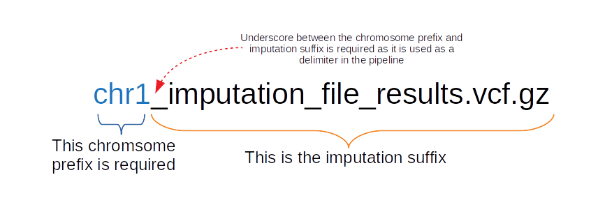
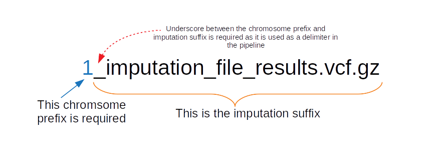

Formatting the Required Files¶
The pipeline does require some formatting for file names and contents within files to be present. This section explains the file format expectations, as well as file name expectations.
Parameter: ChromosomeLengthFile¶
The ChromsomeLengthFile parameter is a file that can be downloaded and modified from sources such as NCBI and UCSC. It should be a tab-delimted file with chromosomes 1-22 listed in the first column and the length of the chromosome in the second column. This file contains no header. The build you select should be based upon the build used for your imputation file. If only using genotyping file, base this file on the genotype build.
{kind=link}
Warning
hg19 vs hg38 formatting Depending on the build you choose you must format your file accordingly.
hg19: omit "chr" and should strictly be integer values between 1-22 for the first column.
hg38: include the preceding "chr" string (no spaces) for integer values between 1-22 for the first column.
Parameter: ImputeSuffix¶
This string is the suffix of your imputation file. The imputation files require to be named and split in a particular way.
- First, all imputation files follow these rules:
split by chromosome
sample names are the samples names used in
GenerateGRMandGenerateNull(order doesn't need to be maintained)gzipped vcf files, and
have the matching tabix index ending in the imputation file name followed by the .tbi string
This is how each imputation file needs to be named:
for hg38
{kind=link}
for hg19
{kind=link}
Warning
hg19 vs hg38 formatting Depending on the build you choose you must format your file name accordingly.
hg19: omit "chr" and strictly be integer values between 1-22 as the prefix, followed by a required underscore, following by remaining string.
hg38: include the preceding "chr" string (no spaces) for integer values between 1-22 as the prefix, followed by a required underscore, following by remaining string.
Parameter: PhenoFile¶
This is tab-delimited txt file that contains all the sample IDs (must be the same IDs used in the plink file, imputation file, GRM, and null model -- order agnostic). In addition to the sample IDs, it also contains any phenotype(s) you may want to run and any covariates you may want to use, although the user is not required to use everything listed in the header/file.
Below is an example of a tab-delimited PhenoFile. Again, none of these header names are required, however, there needs to be a header variable at minimum that denotes the sample ID and a phenotype to analyze.
{kind=link}
Note
It is worthwhile to generate a single PhenoFile that contains many phenotypes and covariates you may want to analyze for the sample set. Within the config file, the user can specify which single phenotype to run and which covariates to run. That way, the user can run several jobs in parallel using the same PhenoFile but just changing the trait, phenotype, covariates, and invNorm parameters without having to change anything else.
Parameter: Plink¶
Parameter: Pheno¶
Parameter: Covars¶
Parameter: SampleID¶
Parameter: InfoFile¶
This is a tab-delimited file that contains information about all snps present in the genotyping chip and imputation files. This file is really only necessary if GenerateResults: is set to true.
- The following headers must be present:
CHR
POS
Allele1
Allele2
R2
ER2
GENOTYPE_STATUS
{kind=link}